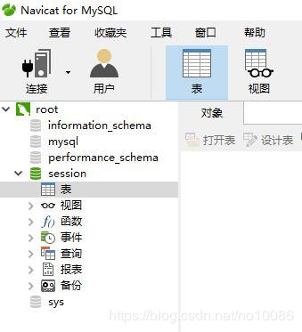

原文出处:本文由博客园博主蓝袍小将提供。
原文连接:https://www.cnblogs.com/lpxj-blog/p/10783928.html
原文连接:https://www.cnblogs.com/lpxj-blog/p/10783928.html
一、简介
实际引用中，有些公司在不同地区会设置不同服务器，因此就需要用到nginx以实现负载均衡，这时，将session数据保存至数据库就成为了需要面对的问题，我们以MySQL数据库为例，看看他是如何将数据上传至mysql中的。
在npm上有一个叫做：express-mysql-session的模块，主要用于将数据上传至mysql数据库，以下为他的实现方式：
var express = require('express');
var app = module.exports = express();
var session = require('express-session');
var MySQLStore = require('express-mysql-session')(session);
var options = {
host: 'localhost',
port: 3306,
user: 'session_test',
password: 'password',
database: 'session_test' //数据库名
};
var sessionStore = new MySQLStore(options);
app.use(session({
key: 'session_cookie_name', //自行设置的签名
secret: 'session_cookie_secret', //密匙
store: sessionStore, //存储管理器
resave: false,
saveUninitialized: false
}));
session story会在内部创建一个MySQL连接池，用于处理数据库的连接。
数据库连接池由于可以实现连接复用，避免了数据库连接频繁建立、关闭的开销。默认情况下，连接池由1个连接组成，但可以使用connectionlimit选项覆盖此连接。你也可以设置额外的连接池option选项。
当使用默认选项时，存储session数据库的表会被自动创建；
二、通过一个实例说明：
1.首先在数据库中我们需要有一个存储数据的数据库：

2.安装以下模块：
const express=require("express");
const mysql=require("mysql");
const cors=require("cors"); //处理跨域
const session=require("express-session");
const MySQLStore=require('express-mysql-session')(session); //连接mysql主要模块3.键入如下代码即可上传至mysql数据库：
const express=require("express");
const mysql=require("mysql");
const cors=require("cors");
const session=require("express-session");
const MySQLStore=require('express-mysql-session')(session);
var app=express();
// 配置mysql
var options = {
host: 'localhost',
port: 3306,
user: 'root',
password: '123456',
database: 'session'
};
var sessionConnection = mysql.createConnection(options);
var sessionStore = new MySQLStore({
expiration: 10800000,
createDatabaseTable: true, //是否创建表
schema: {
tableName: 'session_tab', //表名
columnNames: { //列选项
session_id: 'session_id',
expires: 'expires',
data: 'data'
}
}
}, sessionConnection);
//配置中间件
app.use(session({
key: 'aid',
secret: "keyboard cat",
store: sessionStore,
resave: false,
saveUninitialized: true,
cookie: ('name', 'value',{ maxAge: 5*60*1000,
secure: false,
name: "seName",
resave: false})
}));
app.use(cors());
app.use('/login',function(req,res){
//设置session
req.session.userinfo='张三';
res.send("登陆成功！");
});
app.use('/loginOut',function(req,res){
//注销session
req.session.destroy(function(err){
res.send("退出登录！"+err);
});
});
app.use('/',function(req,res){
//获取session
if(req.session.userinfo){
res.send("hello "+req.session.userinfo+"，welcome to index");
}else{
res.send("未登陆");
}
});
app.listen(8080);这时启动我们的服务器：
进入http://localhost:8080/时显示未登录：
重新连接如mysql：
：将session上传至mysql数据库4.png)
我们可以看到，这时session自动创建了session_tab表，但表上并没有相应的名称，只有配置信息，接下来在浏览器中进入login路由：
我们只需重连mysql数据库，就可看到关于用户信息也有了：
当浏览器进入loginOut路由后，会执行req.session.destroy操作，将session销毁，而数据库表中的用户信息也将销毁：
重连数据库后：
当然大家也可根据自己的实际需求来发挥，这里不在进行更多阐述。